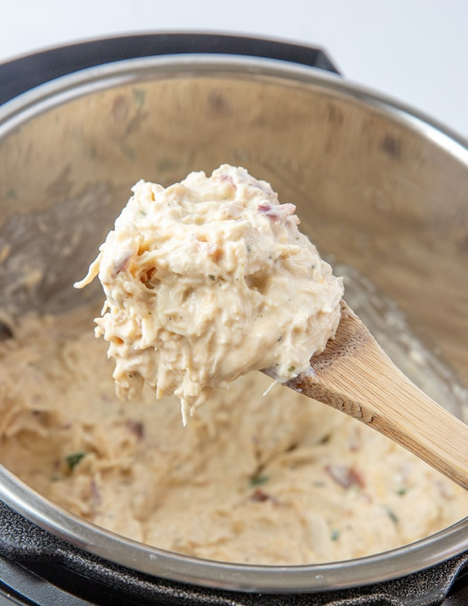

Shredded Ranch Chicken

Description
This is my favorite of the three. Not only is it super easy to make it is very good and stores really well too. Serve on rice either brown or
white rice works. Also works on noodles epecially egg noodles. This specific variation of the dish is realtively hard to find (based on my own searching for it)
but many variations exist.
Ingredients
- 1 C. Chicken Broth
- 1/4 C. Raw Bacon (2 slices, chopped)
- 1oz Packet Ranch Seasoning
- 2lb Chicken Breasts
- 4oz Light Cream Cheese, Cubed
- Green Onions
Instructions
- Turn your Instant Pot to Saute and add the chopped backon. Saute for 3-4 minutes or until the bacon is crisped. Add the chicken broth,
ranch seasoning and chicken. Cook thawed chicken on high pressure for 12 minutes. (cook frozen chicken on high pressure for 20 minutes)
Turn the pressure valve to "Vent" to release all of the pressure.
- Remove the chicken breasts from the pot and place on a plate or cutting board. Shred the chicken using two forks.
- Remove 2/3 cup of liquid from the pot. (Reserve the liquid for cooking rice.) ADd the cream cheese and set to Saute for 2-3 minutes until the cream cheese is completely melted.
Return the shredded chicken to pot and stir until well combined. Top with diced green onions.